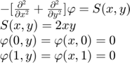
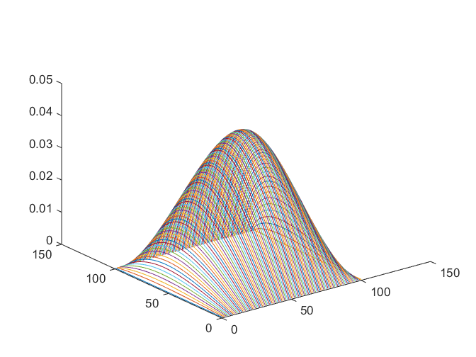

用松弛迭代法求解如下二维椭圆偏微分方程:
Contents
问题

clear;clc;
N=100;
h=1./N;
w=1.5;
for i=1:N+1
for j=1:N+1
x=(i-1)*h;
y=(j-1)*h;
s(i,j)=2.*x*y;
phi(i,j)=0.;
end
end
for ite=1:1000
for i=2:N % notice that this time the range of i is different from the previous one due to the boundary limit.
for j=2:N
phi(i,j)=(1-w)*phi(i,j)+w/4.*(phi(i+1,j)+phi(i-1,j)+phi(i,j+1)+phi(i,j-1)+h^2.*s(i,j));
end
end
if mod(ite-1,20)==0
disp('Iteration');
disp(ite);
E=0;
for i=2:N
for j=2:N
E=E+((phi(i,j)-phi(i-1,j))^2.+(phi(i,j)-phi(i,j-1))^2.)/2.-h^2.*s(i,j)*phi(i,j);
end
end
disp('Energy');
disp(E);
end
end
Iteration
1
Energy
-6.180354803184013e-05
Iteration
21
Energy
-9.927892855066244e-04
Iteration
41
Energy
-0.001674593415556
Iteration
61
Energy
-0.002221681270674
Iteration
81
Energy
-0.002675487634143
Iteration
101
Energy
-0.003059081145330
Iteration
121
Energy
-0.003387382953717
Iteration
141
Energy
-0.003670873065084
Iteration
161
Energy
-0.003917310709671
Iteration
181
Energy
-0.004132655915927
Iteration
201
Energy
-0.004321612791071
Iteration
221
Energy
-0.004487972647934
Iteration
241
Energy
-0.004634842292158
Iteration
261
Energy
-0.004764802203179
Iteration
281
Energy
-0.004880019767170
Iteration
301
Energy
-0.004982332525642
Iteration
321
Energy
-0.005073310757532
Iteration
341
Energy
-0.005154305423467
Iteration
361
Energy
-0.005226485501666
Iteration
381
Energy
-0.005290867484433
Iteration
401
Energy
-0.005348338983828
Iteration
421
Energy
-0.005399677845824
Iteration
441
Energy
-0.005445567795256
Iteration
461
Energy
-0.005486611369449
Iteration
481
Energy
-0.005523340709451
Iteration
501
Energy
-0.005556226640659
Iteration
521
Energy
-0.005585686373791
Iteration
541
Energy
-0.005612090082202
Iteration
561
Energy
-0.005635766555352
Iteration
581
Energy
-0.005657008085730
Iteration
601
Energy
-0.005676074714205
Iteration
621
Energy
-0.005693197933999
Iteration
641
Energy
-0.005708583934325
Iteration
661
Energy
-0.005722416449910
Iteration
681
Energy
-0.005734859270957
Iteration
701
Energy
-0.005746058458950
Iteration
721
Energy
-0.005756144306388
Iteration
741
Energy
-0.005765233072672
Iteration
761
Energy
-0.005773428523630
Iteration
781
Energy
-0.005780823298250
Iteration
801
Energy
-0.005787500123011
Iteration
821
Energy
-0.005793532891491
Iteration
841
Energy
-0.005798987624697
Iteration
861
Energy
-0.005803923325646
Iteration
881
Energy
-0.005808392740075
Iteration
901
Energy
-0.005812443033783
Iteration
921
Energy
-0.005816116395829
Iteration
941
Energy
-0.005819450575827
Iteration
961
Energy
-0.005822479362566
Iteration
981
Energy
-0.005825233010432
plot the figure of
figure;
[xx,yy] = meshgrid(1:N+1,1:N+1);
axis([1,N,1,N]);
plot3(xx,yy,phi)
